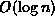
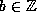
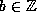

Data Structures and Algorithms
with Object-Oriented Design Patterns in Java
Data Structures and Algorithms
with Object-Oriented Design Patterns in Java
A number of divide-and-conquer algorithms are presented
in the preceding sections.
Because these algorithms have a similar form,
the recurrences which give the running times of the algorithms
are also similar in form.
Table  summarizes the running times
of Programs , and .
summarizes the running times
of Programs , and .
| program | recurrence | solution |
| Program | T(n)=T(n/2)+O(1) |  |
|
Program | T(n)=2T(n/2)+O(1) | O(n) |
|
Program | T(n)=2T(n/2)+O(n) | |
In this section we develop a general recurrence
that characterizes the running times of many divide-and-conquer algorithms.
Consider the form of a divide-and-conquer algorithm to solve a given problem.
Let n be a measure of the size of the problem.
Since the divide-and-conquer paradigm is essentially recursive,
there must be a base case.
That is, there must be some value of n, say  ,
for which the solution to the problem is computed directly.
We assume that the worst-case running time for the base case
is bounded by a constant.
,
for which the solution to the problem is computed directly.
We assume that the worst-case running time for the base case
is bounded by a constant.
To solve an arbitrarily large problem using divide-and-conquer,
the problem is divided into a number smaller problems,
each of which is solved independently.
Let a be the number of smaller problems to be solved
( ,  ).
The size of each of these problems is some fraction of
the original problem,
typically either or
).
The size of each of these problems is some fraction of
the original problem,
typically either or  ( , ).
( , ).
The solution to the original problem is constructed
from the solutions to the smaller problems.
The running time required to do this depends on the problem to be solved.
In this section we consider polynomial running times.
That is,  for some integer
for some integer  .
.
For the assumptions stated above, the running time of a divide-and-conquer algorithm is given by
In order to make it easier to find the solution to Equation ,
we drop the  s as well as the from the recurrence.
We can also assume (without loss of generality) that .
As a result, the recurrence becomes
s as well as the from the recurrence.
We can also assume (without loss of generality) that .
As a result, the recurrence becomes
Finally, we assume that n is a power of b.
That is,  for some integer .
Consequently, the recurrence formula becomes
for some integer .
Consequently, the recurrence formula becomes
We solve Equation as follows.
Divide both sizes of the recurrence by
and then telescope :
Adding Equation through Equation ,
substituting T(1)=1
and multiplying both sides by gives
In order to evaluate the summation in Equation
we must consider three cases:
 Copyright © 1998 by Bruno R. Preiss, P.Eng. All rights reserved.
Copyright © 1998 by Bruno R. Preiss, P.Eng. All rights reserved.